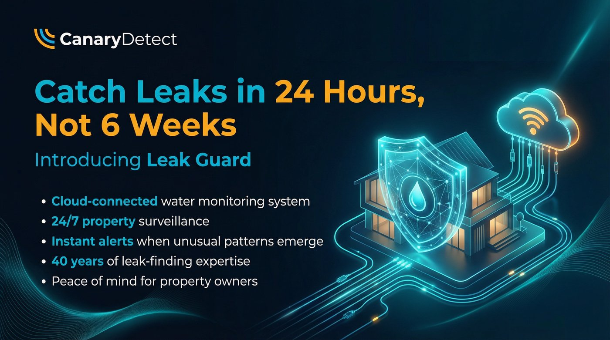

We have just completed something we have been working towards for a long time. And if you own or manage a property in Lanzarote, this one is worth reading.

This week, Canal Gestión Lanzarote formally recognised Canary Detect as an authorised installer. It is the final piece of a set we have been quietly assembling for the best part of two years, and it means something concrete for every property owner on this island.
Why this matters to you
If a hidden leak has caused an unusually high water bill, you may be entitled to a reduction of up to 50%. What most people don't know is that to qualify, the work must be carried out by a recognised authorised installer, and the claim must be submitted with that installer's official reference number. Without it, Canal Gestión cannot process a reduction on your behalf, regardless of how professional the repair was or how well the paperwork is presented.
Water in Lanzarote is billed on a two-month cycle. By the time a high bill arrives, a leak could have been running silently underground for sixty days. We regularly attend jobs where customers are sitting on bills of €1,000, €2,000, or more, with no visible signs whatsoever. No damp. No wet ground. Just a number on a page that doesn't make sense.
From this week, when Canary Detect carries out your repair, your documentation carries the reference. Your claim is supported in full.

The journey
Getting formally recognised by Canal Gestión was not a simple process. It was not a form, a phone call, or a quick email. It required our technical qualifications to be translated in full and formally homologated for recognition under Spanish regulatory standards. It required a review of our technical credentials at a national level. It required us to meet civil liability insurance requirements set out under Spain's official contractor certification framework, and to obtain approvals through multiple stages of that process.
It took months. There were moments we questioned whether the bureaucracy would ever end. But we believed it was worth doing properly, and we got there.
All of our Spanish-language reports, invoices, and guarantees will now carry our unique official installer reference number. That number is the key that unlocks the reduction claim process with Canal Gestión. Without it, a claim simply cannot be processed. With it, every customer we work with has everything they need.
The hat trick
Here is where it gets interesting.
Canal Gestión and Club Lanzarote are the only two water companies operating in Lanzarote. Every property on this island is supplied by one or the other.
We have held a formal agreement with Club Lanzarote for some time. Customers whose water is supplied by Club Lanzarote and who use Canary Detect are guaranteed a rebate on production of our report and invoice. That arrangement is in place, it is documented, and it works.
Earlier this year we were approved as a registered provider by a national home assistance network covering policyholders from 21 major insurance companies operating across Lanzarote. That process was also rigorous. It also took time. But it means there is now a strong chance that if you make a claim on your home insurance for a leak, your insurer will send Canary Detect to you directly.
This week's Canal Gestión recognition completes the set.
in the network
Both covered.
Every customer covered.
Regardless of who supplies your water, regardless of whether you are insured or uninsured, Canary Detect is now the company that gives you the best possible chance of recovering money from a leak-related bill.

If you get a high bill or suspect a leak, don't panic
Our advice has always been the same and it has not changed: call your insurer first. Before you engage anyone. Before you call a plumber. Call your insurer, explain the situation, and find out what they will cover.
If your insurer tells you to source your own contractor, confirm in writing that the company you are considering is a registered authorised installer with Canal Gestión. Without that confirmation, you risk losing your right to claim a reduction on your water bill entirely.
It is not enough for a company to tell you they can handle the claim. Get the reference. Get it in writing. Before any work begins.
The risk of getting it wrong

When a €2,000 water bill arrives, panic is a natural response. And panic leads to Facebook. Someone posts in the local group, a name gets recommended, a number gets called, and by the afternoon a man with a pressure gauge is at the door.
Maybe he finds the leak. Maybe he even fixes it. But unless he is a formally registered authorised installer with an official reference number recognised by Canal Gestión, none of it counts. The repair is done, the invoice is paid, and when you approach Canal Gestión to claim a reduction on your bill, there is nothing they can do for you. No reference, no claim. The money is gone.
And we will be honest with you. Until this week, that included us.
We could find your leak. We could fix it cleanly, repair the damage, and leave your property as if nothing had ever happened. Our reports are professional, our invoices are in Spanish, and our guarantees are thorough. But unless you were a Club Lanzarote customer, where our formal agreement guaranteed your rebate, we could not help you with that Canal Gestión bill. We did not have the reference. We could not make the claim possible.
That changes today.
The better outcome
Here is the honest version of this story. Even if everything goes perfectly, you act quickly, you use the right company, Canal Gestión processes your claim without issue, a 50% reduction on a €2,500 bill still means you have lost €1,250. You have still had the stress, the uncertainty, and the weeks of waiting.
The better outcome is catching the leak in the first twenty-four hours, before it costs you anything at all.
LeakGuard is our cloud-connected monitoring system. It attaches to your water meter, learns your property's normal usage pattern, and sends an alert to your phone the moment something looks wrong. No WiFi required. No mains power. It runs on its own cellular connection and never switches off.

LeakGuard caught its first live leak within twenty-four hours of being installed. No damp. No bill shock. No claim. Just a notification, a swift survey, and a targeted repair before the next billing cycle arrived.
Find out more at leakguardlanzarote.com
Ready to talk?
Book a survey, discuss a high bill, or find out more about LeakGuard.